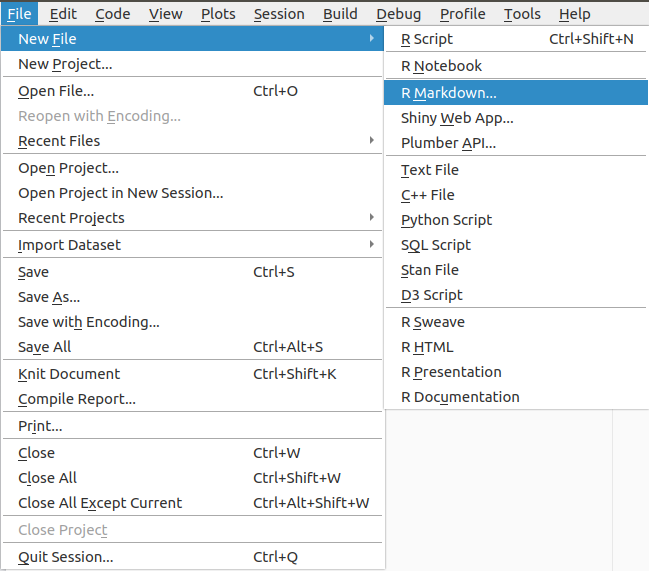
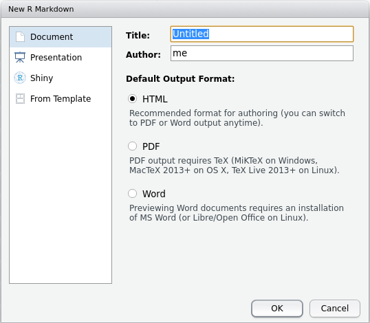
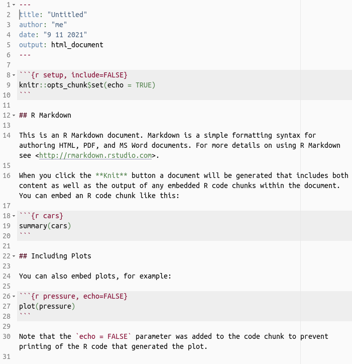
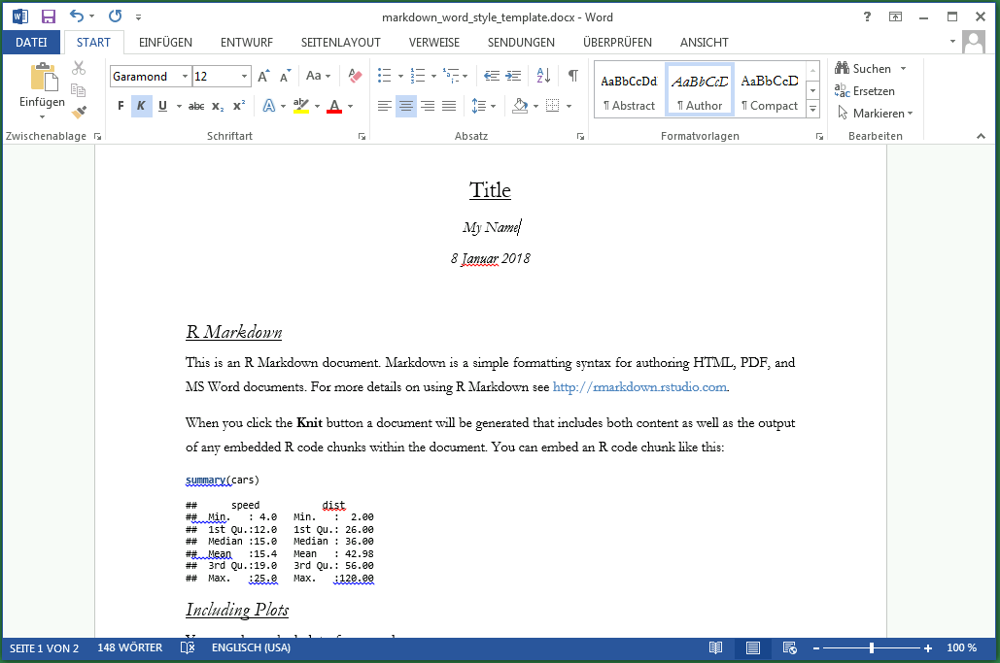

Introduction to R: Session 05
June 27, 2024 (Version 0.1)
All contents are licensed under CC BY-NC-ND 4.0.
1 R markdown
R markdown (Allaire et al. (2021), Xie, Allaire, and Grolemund (2018), Xie, Dervieux, and Riederer (2020)) offers an environment to combine the analysis / manipulation / … of data with an immediate production of a document in one step (all materials of this course were created with a variant of R markdown).
With a single R markdown file, you can:
- save an evaluate R code, and
- generate a report (article, presentation slides, …) containing the results of the evaluation of the R code.
R markdown documents are completely reproducible and support a variety of static and dynamic output formats (docx, pdf, html, …).
1.1 Structure
An R markdown file is essentially divided into three areas:
- Title:
---
title: "Estimating Potential for Late-Frost-Events in Goettingen"
author: "Holger Sennhenn-Reulen"
date: "June 26, 2024"
output: word_document
---- R code ‘chunks’:
```{r}
summary(frost)
```- and, embedded in between, text with (reduced) formatting:
This sentence will be given as ordinary text in the output document,
with words in *italics* or **bold**.1.2 Installation
A connection to the internet is required for the following steps:
Create a new folder
markdown filesin your favorite working directory.Start RStudio and click on
File\(\rightarrow\)New File\(\rightarrow\)R Markdown: After clicking on ‘R Markdown’ you will be asked whether you want to install some R packages . After confirmation, with subsequent installation, the following window should open: 
Enter a title and your name and mark the selection ‘Word’. Click on ‘OK’.
The following document is generated (in this example, the output is still set on the default
html_document): Save this file in the
markdown filesfolder: The file has the extension.Rmd, for R-Markdown.Finally: click on the blue ‘Knit’ button.
A Word / OpenOffice Writer file with R commands, graphics and results should open.
1.3 Links & misc
- Get started!
- R markdown cheat sheet
- R markdown reference guide
- Click
Help\(\rightarrow\)Markdown Quick Reference - Inlcude template file:
output:
word_document:
highlight: null
toc: yes
reference_docx: markdown_word_style_template.docx
---where markdown_word_style_template.docx is a file that stores built-in Microsoft Office Word styles (German: Formatvorlagen):

2 Other topics
2.2 R-Code Structure
I usually use the following six sections structure for applied statistics on real data:
- 1st section: Organize R session (Load packages, set working directory, …)
- 2nd section: Data management (Load data, manipulate and organize data, hold your global environment clean using
rm()) - 3rd section: Descriptive analysis (Plots, plots, plots, …)
- 4th section: Statistical modelling
- 5th section: Visualization (is better than tabulation) of results
- 6th section: Show the outcome of
sessionInfo()
Note: If this is your markdown structure, then whatever you show in section 5 is fully reproducible (given you don’t make excessive use of save and load).
References
Private webpage: uncertaintree.github.io↩︎